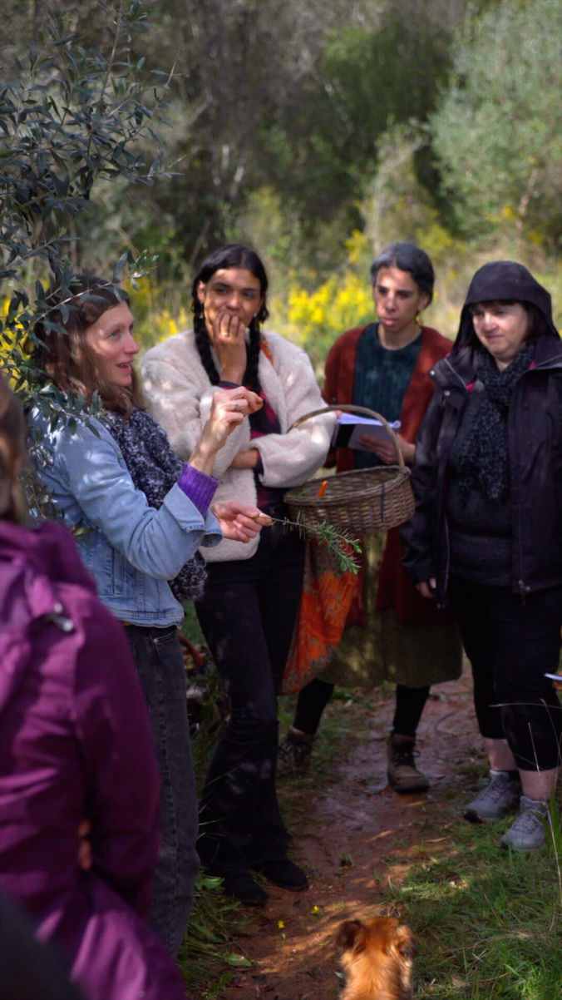

Hi! We’re Katy and Eugene, filmmakers specialising in video production in Portugal. As a friendly and creative Portugal video production company and experienced videographers in Portugal, we focus on storytelling, beautiful visuals, and strategy.
We know it can be overwhelming to create videos that stay true to your story, look great, and reach the right people. Maybe you’ve tried filming yourself, or you’re busy with everything else in your business. Maybe you’re unsure what kind of video to make next.
Whether you’re filming in Lisbon, Porto, Coimbra or along the Algarve coast, we’re here to create beautiful videos that feel real, reflect your story, and get seen by the right audience.
Our video production services in Portugal are designed to fit your brand’s needs and connect with your audience in a meaningful way. Whether you need help with filming in Portugal or are looking for a trusted production company in Portugal, our full range of production services in Portugal has you covered.
Brand Video Production in Portugal
Tell your story with authentic videos that show who you are and why you matter.
Social Media Video Production Portugal
Make short, attention-grabbing videos that help grow your followers on Instagram, TikTok, LinkedIn, and more.
Drone Videography
We offer expert drone filming in Portugal to capture amazing aerial shots that lift your story.
Event Video Production
Need a reliable event videographer in Portugal? We bring energy and style to your special moments.
Product Video Production
Show your products clearly and creatively, helping customers connect with what you offer.
Nature & Travel Video Production
Highlight Portugal’s beautiful nature and travel spots with inspiring visuals.
Creative and Charity Video Production
Share purpose-driven stories that inspire support and honestly show your goals.
Portugal is beautiful! From wild coastlines and mountain views to charming old cities and peaceful countryside. Whether it’s the lively streets of Lisbon, the cliffs of the Algarve, or the calm of Serra da Estrela, we specialize in video production in Portugal that brings your story to life using these amazing places.


1. Discovery
We start with a relaxed chat to learn about your goals, audience, and message. This helps us understand your story clearly.
2. Creative Planning
We shape your story with scriptwriting, storyboards, and choosing the right locations, all designed to fit your vision.
3. Filming
We keep the shoot calm and professional, focusing on capturing real moments in a friendly, team approach.
4. Editing
We select the best clips and add music, sound, and graphics to make a video that connects and tells your story well.
5. Delivery & Support
We deliver your video in the formats you need and give you tips on sharing it to get the most views and impact.
Hear what our clients say:
“Working with Katy from Munjiri Videos has been a great experience from start to finish. She understood what I was looking for straight away, and guided me (as someone new to commissioning video) content through deciding what to include and creating a script, and made me feel as relaxed as possible during the filming. It was such a pleasure working with her, and the results are fantastic- just what I was looking for. I wouldn’t hesitate to hire Munjiri Videos again, and really hope to work with Katy in the future.”
Flora Collingwood-Norris, Collingwood-Norris
"Katy did a superb job and rapidly understood what we were trying to achieve and provided excellent ideas about how to create a stunning visual feast, backed up by a perfectly judged soundtrack and a compelling narrative. She made great use of a range of film making techniques to highlight the unique features of Embo House and its location, creating an atmosphere which fully chimes with our target clientele. She was innovative and flexible in her approach, but also very focused on getting the detail and message right. Last, but not least, Katy was fun to work with despite the need to complete the project in a short, intense time-frame. We can not recommend her highly enough."
Ginny Knox , Embo House
"The footage is the best we have seen from our schools – the colors, images,
shots, etc. It’s amazing that Katy was able to find a compelling story to fit what we
needed, and we are so grateful for her expertise and time!"
Reshma, Impact Network
Even Michelle Obama appreciates our work (she shared one of our videos with her 56.9 million
Instagram followers).


Purpose-Driven Storytelling
We make meaningful videos that show the real impact of your work. Our stories feel down to earth and create connection.
Experienced Filmmakers
As professional videographers in Portugal, we bring local knowledge and a practical approach to make videos that truly connect.
Full-Service Production
From the first idea to filming, editing, and final delivery, we handle every step. This means less stress for you and a smooth process.
Flexible & Custom
Every story is unique. We tailor our work to fit your goals, audience, and budget so your video feels personal and just right for you.
Whether you’re filming in Lisbon, Porto, or along the Algarve coast, we offer expert Lisbon Portugal video production as well as projects across the whole country. As a friendly and reliable production company in Portugal, we know how to work with each location’s unique feel, from Lisbon’s buzzing streets, to Porto’s historic corners, and the Algarve’s beautiful coastline.
If you’re thinking about filming in Portugal, we’ve got you covered with everything from planning and filming to editing. Our goal is to make the whole process easy and enjoyable, so you get a great video that really connects with your audience. No matter what you need, our production services in Portugal are flexible and tailored just for you.
We’re based in Portugal, but we work with clients all over the world. We’ve partnered with businesses in many fields, like sustainability, education, artisan crafts, and creative projects. Our goal is to help your reach the right audience, no matter where they are.


Interested in bringing your story to life? Check out our services to see how we can help.
Or you can get in touch at katy@munjiri.com to discuss your project.

Q: What types of video production services do you offer in Portugal?
A: We offer a full range of video production services including brand videos, social media content, nature and eco films, drone videography, event coverage, and product videos, all tailored to your unique story and goals.
Q: Where in Portugal do you film?
A: We’re based in Portugal and love shooting across the country, from the stunning landscapes of Serra da Estrela to vibrant cities and charming coastal towns. We also travel worldwide to meet our clients’ needs.
Q: How involved do I need to be during the video production process?
A: We believe collaboration is key, but we handle the technical details so you can focus on being yourself. We keep you updated throughout filming and editing to ensure the video feels true to your vision.
Q: What equipment do you use for video production?
A: We use professional-grade cameras, lenses, lighting, and drone technology to ensure your video looks polished and captivating, while maintaining an authentic, natural feel.
Q: What’s the typical cost of a wedding videographer in Portugal?
A: Pricing depends on your event size and needs, but we offer custom quotes to fit your budget and deliver stunning results. Contact us for details.
Q: How long does the video production process take?
A: Timelines vary depending on the project’s complexity and scope. Typically, planning and filming take 1-2 weeks, with editing and final delivery within 2-4 weeks after filming.
Q: Do you offer videographer and editing services in Portugal?
A: Yes, we offer full-service video production, including on-location videography and professional video editing. Whether you need a solo videographer or a full crew, we adapt to your project size and needs.

Brand Video Production
Social Media Video Production
Nature Video Production
Creative Video Productions
Charity Video Production
Drone Videographer
Event Video Production
Product Video Production
Travel Video Production
Learn Video Making
Video Storytelling
Video Making Tips
Video Marketing & Social Media Strategies
Nature Stories
Behind the Scenes
Client Stories
Locations & Travel
Location
Based in Portugal and South Africa, offering video production services worldwide.
Email: katy@munjiri.com
Get updates and free resources.